重启日
第二章
循 环 加 速
∞ Loop 6 — Delta +60s
↓ 向下滑动开始阅读 ↓
7:01 觉醒
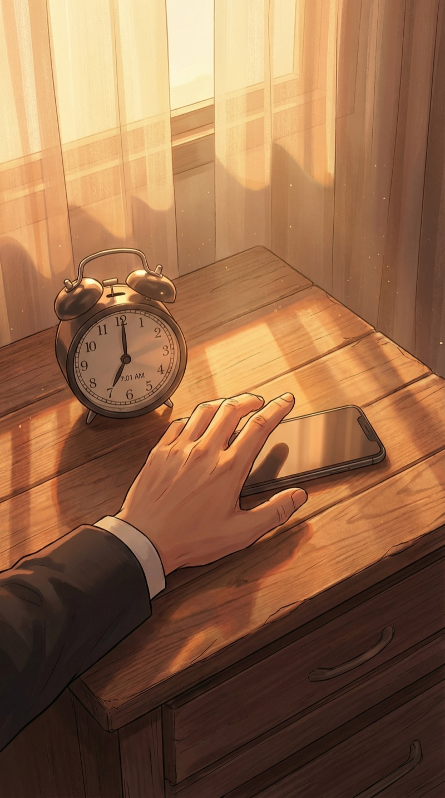
7:01。
比昨天多了一分钟。
我的手伸向手机，指尖有点发抖——不是因为紧张，是因为兴奋。
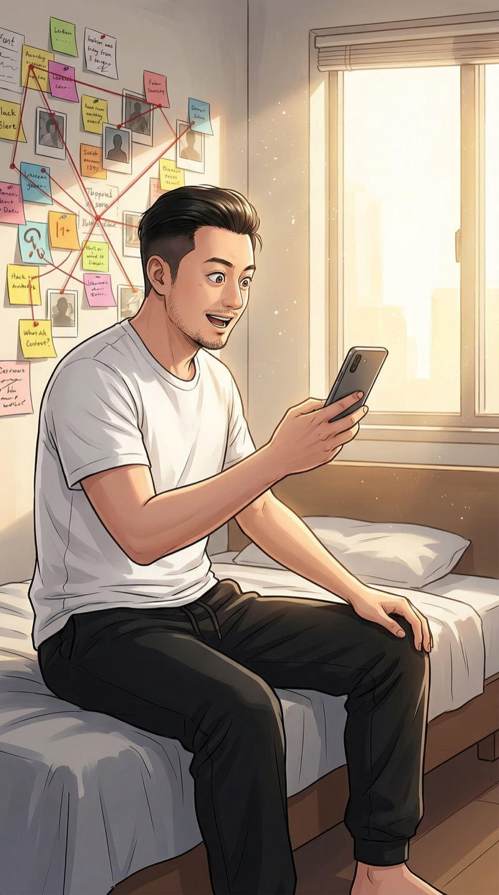
坐在床边，盯着手机屏幕上的时间反复确认。
身后那面墙——我的"疯狂侦探板"，贴满了五颜六色的便签。
五次循环的全部观察记录。
[LOG] Loop 6 init. Delta_time = +60s
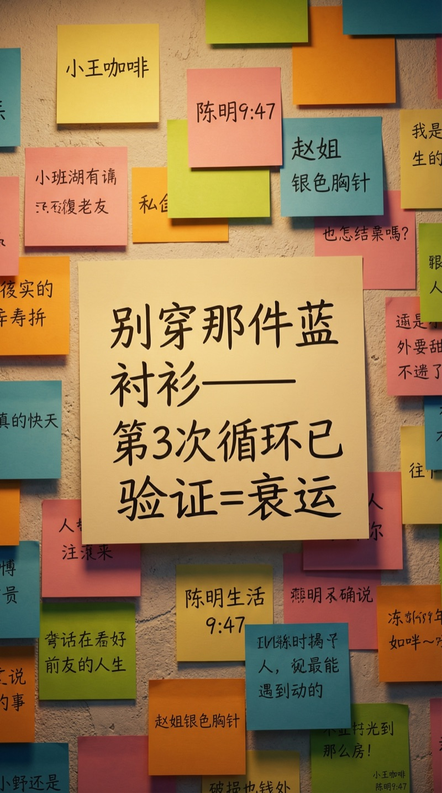
便签上写着我五次循环积累的情报：
"小王咖啡"——她每天9:10端咖啡经过走廊。
"陈明9:47"——他每天9:47打电话说PPT的事。
"赵姐银色胸针"——赵姐每次都戴那枚银色几何形胸针。
最大的一张写着：别穿那件蓝衬衫——第3次循环已验证=衰运。
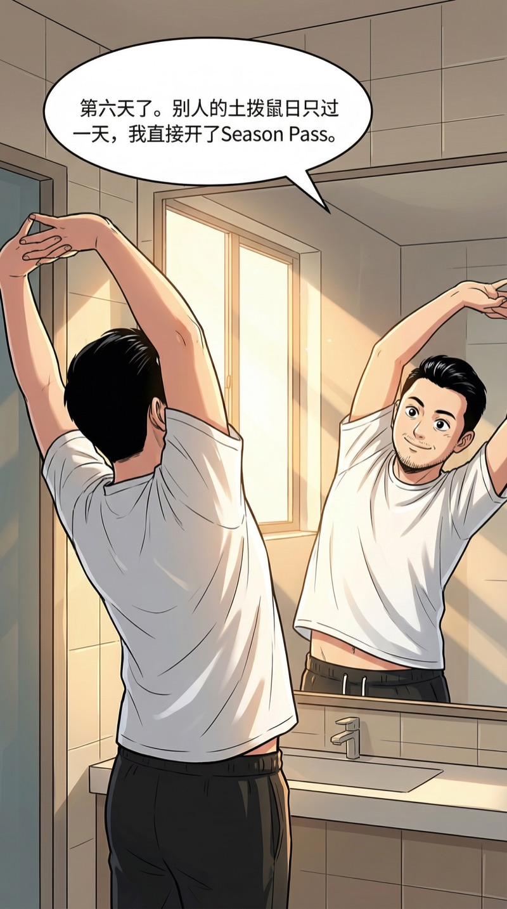
对着镜子伸了个懒腰，看着镜中那个眼睛下面挂着黑眼圈的自己，忍不住自嘲一笑。
"第六天了。别人的土拨鼠日只过一天，我直接开了Season Pass。"
小王咖啡进化·第六版
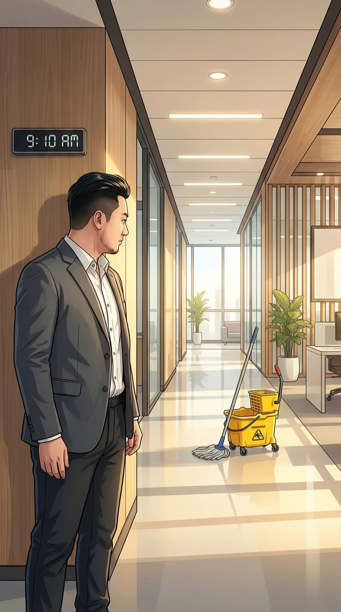
9:10，公司走廊。
拐角处，那个该死的拖把桶又摆在那里了。
前五次循环，小王都是被这个桶绊倒、咖啡洒一身。我试过提醒她、接住杯子、扶住她——全是治标不治本。
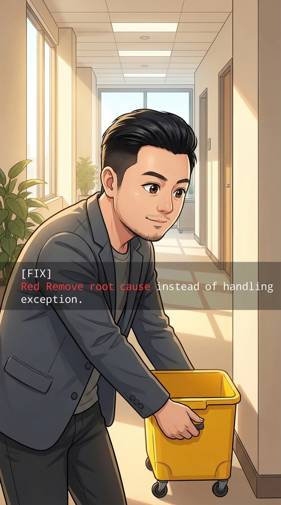
这次，我弯腰把桶挪到了墙角。
表情轻松得像在做第100次排练——因为确实差不多了。
[FIX] Remove root cause instead of handling exception
小王端着咖啡安全通过，走了两步突然回头：
"朱总？你怎么知道那里有桶？"
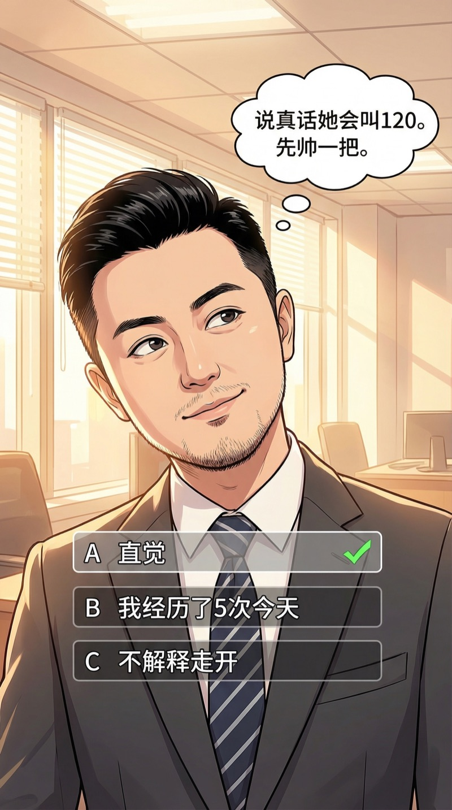
⚡ DECISION-2
怎么回答？
A. "直觉。"✅
B. "我经历了5次今天。"
C. 不解释，帅气走开。
"说真话她会叫120。先帅一把。"
我歪了歪头，微笑："直觉。"
帅了大概0.3秒——然后被走廊尽头的保洁阿姨喊了一嗓子："谁动了我的桶！！"
陈明电话·变奏
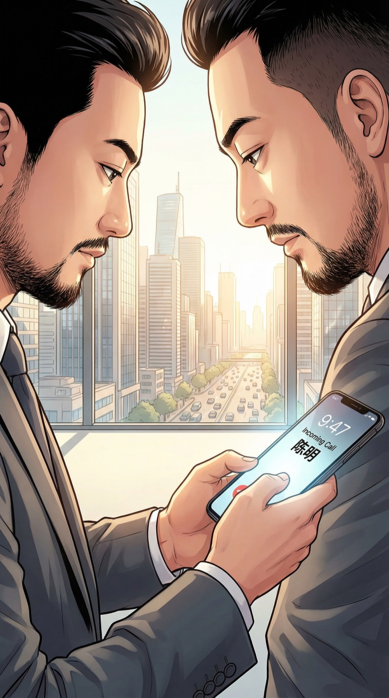
9:47，手机准时响起。
来电显示：陈明。
六次循环，一秒不差。
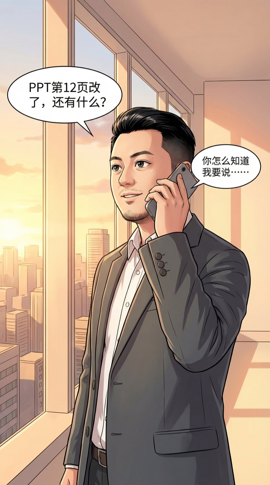
这次我抢先开口：
"PPT第12页改了，还有什么？"
电话那头沉默了三秒。
"你怎么知道我要说……"
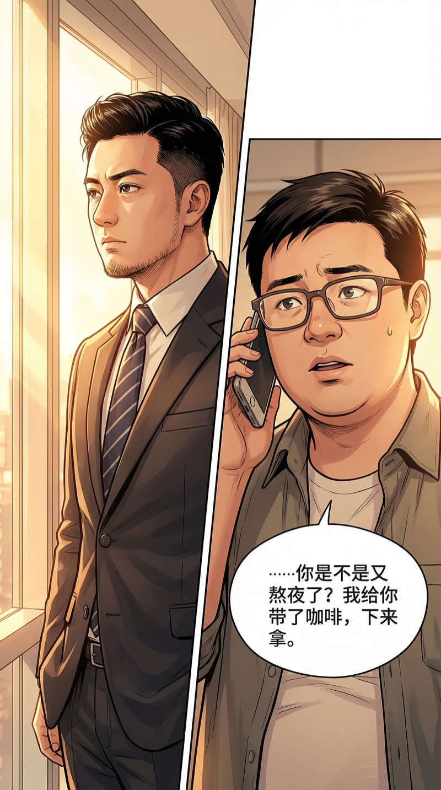
我靠着落地窗，语气突然认真了：
"老陈，如果我告诉你今天会重复，你信吗？"
陈明推了推方框眼镜，表情茫然：
"……你是不是又熬夜了？我给你带了咖啡，下来拿。"
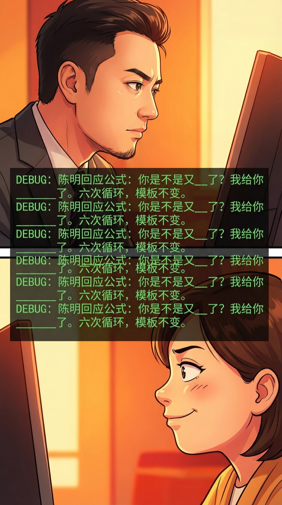
陈明回应公式："你是不是又__了？我给你__了。"
六次循环，模板不变。
此人的确定性堪比物理常数。
路演新策略
走在去路演的路上，心态和前五次完全不同了。
"前5次我在优化表演。这次我要优化状态。"
不紧张了。从容得像在逛街。
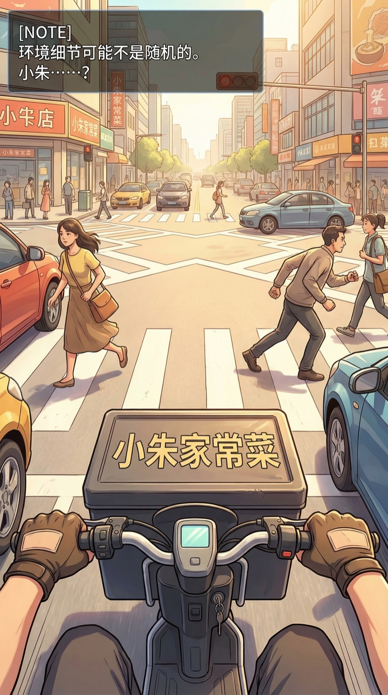
路口，一个外卖小哥闯红灯冲过去，电动车后面的外卖箱上写着："小朱家常菜"。
[NOTE] 环境细节可能不是随机的。"小朱"……？
我顿了一下。这循环里的所有东西，真的只是"重复"吗？
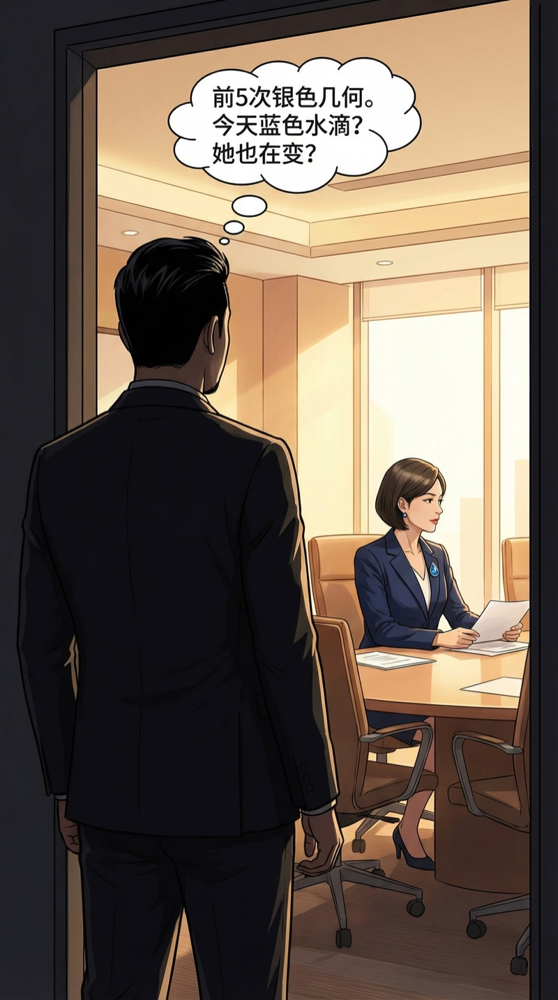
走进会议室。赵姐已经坐在那里了。
但今天，她胸前戴的不是银色几何形胸针——是一枚蓝色水滴形的。
"前5次银色几何。今天蓝色水滴？
她也在变？"
路演·赵姐变奏
投影幕前，我的姿态比前五次放松了不止一个级别。
不是在"演"一个自信的CEO。
而是真的不紧张了——毕竟这个PPT我已经讲了六遍。
赵姐突然抬手打断了我。
但她的表情不是挑剔——是好奇。
"上一次你说想让AI成为每个人的朋友。我回去想了一晚上。"
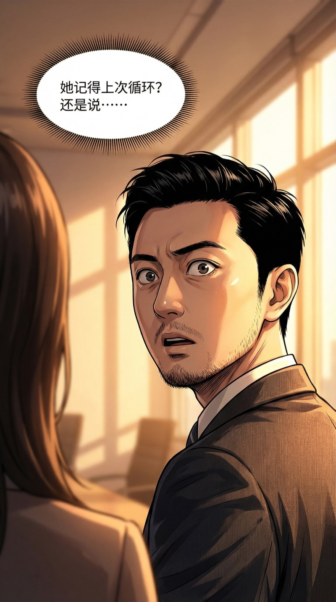
我整个人僵住了。
"上一次"？
什么"上一次"？
"她记得上次循环？还是说……"
赵姐靠在椅背上，双手交叉，审视中带着一丝微笑：
"别紧张。你昨天说的和今天的PPT，完全是两个人在讲。"
"真诚的痕迹……会积累在别人身上。"
核心发现
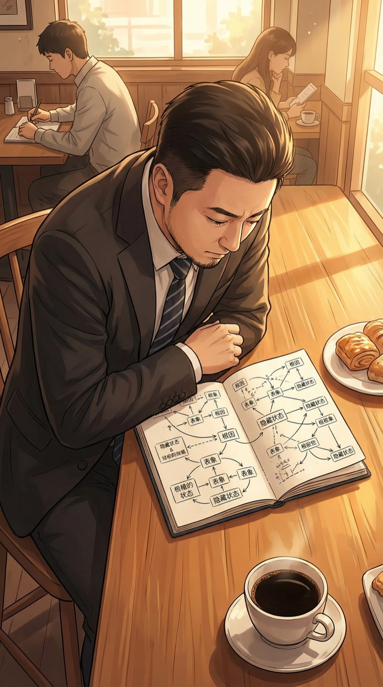
下午，一个人坐在咖啡馆角落。
笔记本摊开，画满了六次循环的事件网络图。
箭头、圈圈、标注密密麻麻。旁边的美式已经凉了。
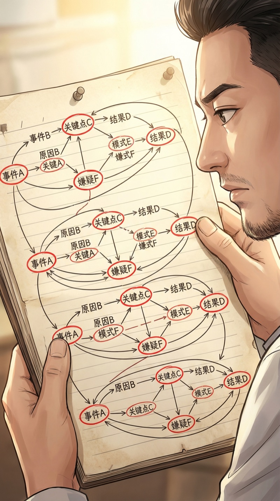
每个人的行为模式、微表情变化、台词差异……
我像个疯狂的数据科学家一样标注了所有异常值。
"根因"、"表象"、"隐藏状态"——
这三个词在笔记本上出现了不下二十次。
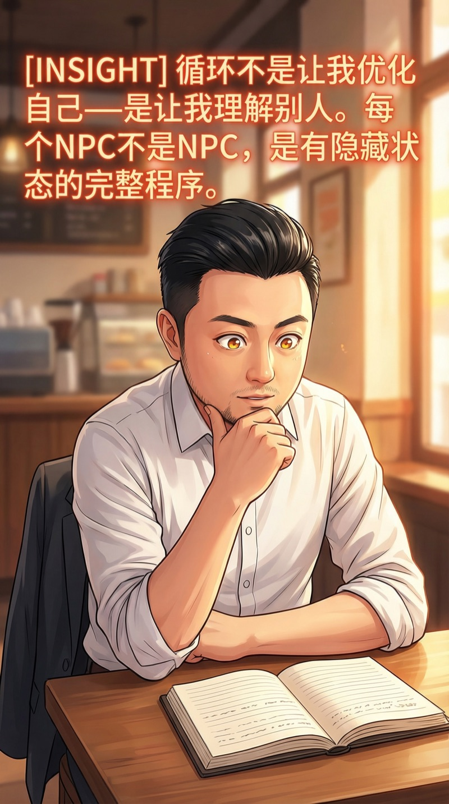
托着腮，盯着笔记本——
突然，所有碎片拼在了一起。
[INSIGHT] 循环不是让我优化自己——是让我理解别人。
每个"NPC"不是NPC，是有隐藏状态的完整程序。
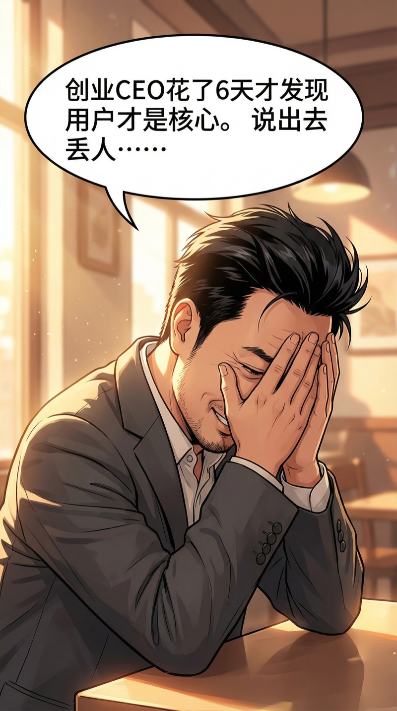
我双手捂脸，发出一声苦笑。
"创业CEO花了6天才发现'用户才是核心'。
说出去丢人……"
黄昏抉择
傍晚回到公司。
路过陈明工位的时候，余光扫到他桌上的东西——
一份猎头公司的简历。
夕阳的光正好打在那张纸上。
猎头公司的logo，下面赫然写着：陈明。
我的联合创始人。我的兄弟。
他抬头看到我，愣了一秒——
然后慌忙把简历塞进抽屉。
两个人对视。夕阳从窗户打进来，把所有尴尬都镀上了一层金色。
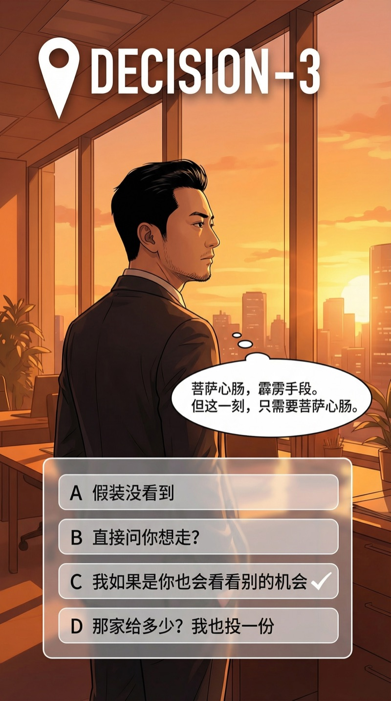
⚡ DECISION-3
A. 假装没看到。
B. 直接问："你想走？"
C. "我如果是你，也会看看别的机会。" ✅
D. "那家给多少？我也投一份。"
"菩萨心肠，霹雳手段。但这一刻，只需要菩萨心肠。"
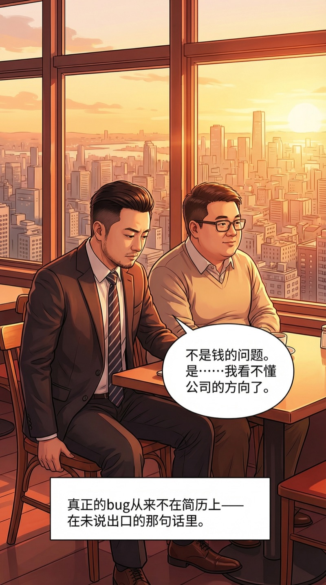
我拉了把椅子，坐到他旁边。
两个人并肩看着窗外的夕阳，谁都没说话。
过了很久，他低下头：
"不是钱的问题。是……我看不懂公司的方向了。"
"真正的bug从来不在简历上——在未说出口的那句话里。"
夜幕·系统提示
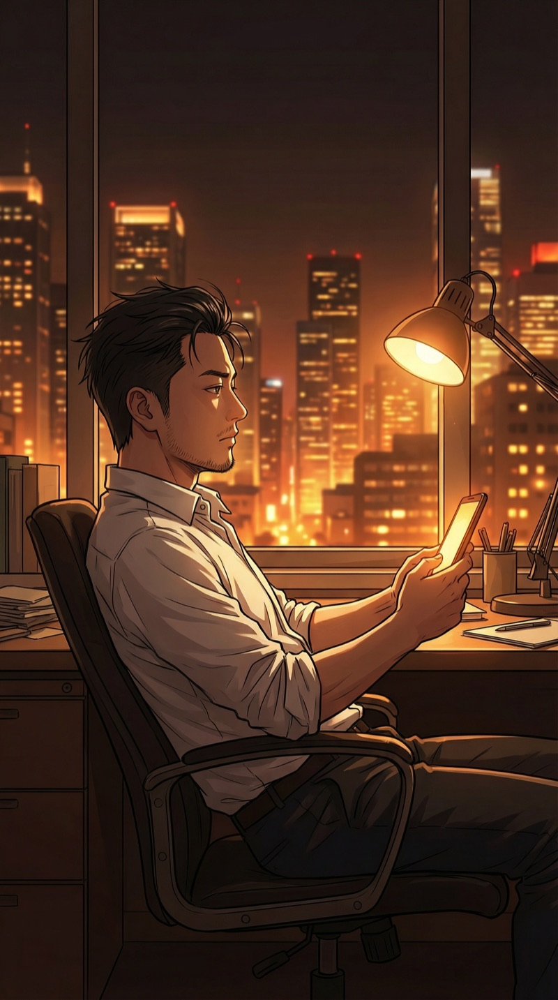
深夜。办公室只剩一盏台灯。
城市的夜景在窗外安静地亮着。
和陈明聊了两个小时。把所有的困惑、焦虑、迷茫——都摊开来说了。
他最后说："你早这么说，我根本不会去看那个猎头。"
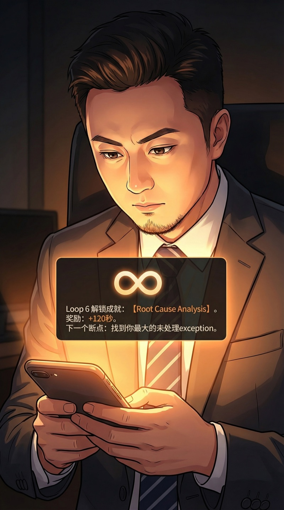
正准备收拾回家，手机震了一下。
一个从没见过的App推送。图标是一个∞。
"Loop 6 解锁成就：【Root Cause Analysis】
奖励：+120秒
下一个断点：找到你最大的未处理exception。"
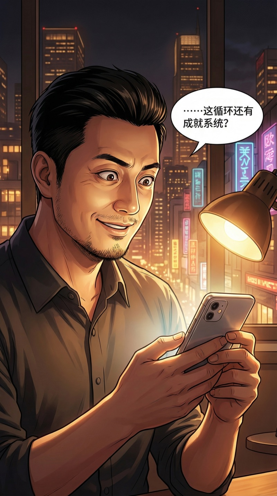
震惊了两秒。然后苦笑。
"……这循环还有成就系统？"
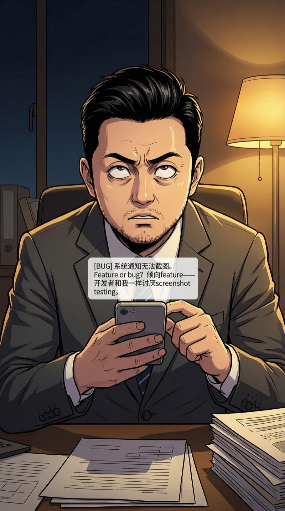
手忙脚乱想截图——通知消失了。
翻了个白眼。
[BUG] 系统通知无法截图。Feature or bug？
倾向feature——开发者和我一样讨厌screenshot testing。
第七天
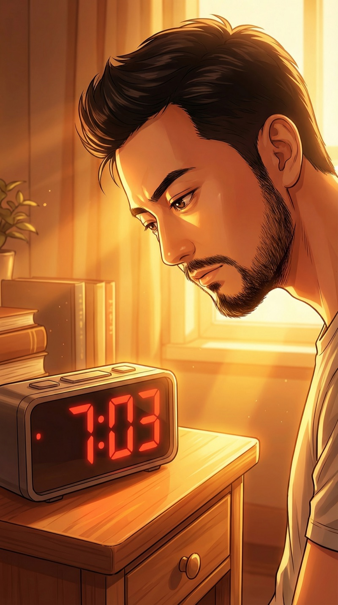
7:03。
比昨天又多了两分钟。和系统通知说的一致——奖励120秒。
这个循环确实在奖励我。
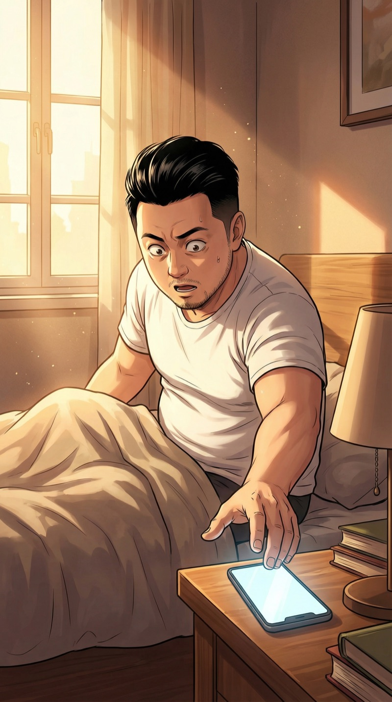
拿起手机——
表情突然变了。
壁纸换了。不是我换的。
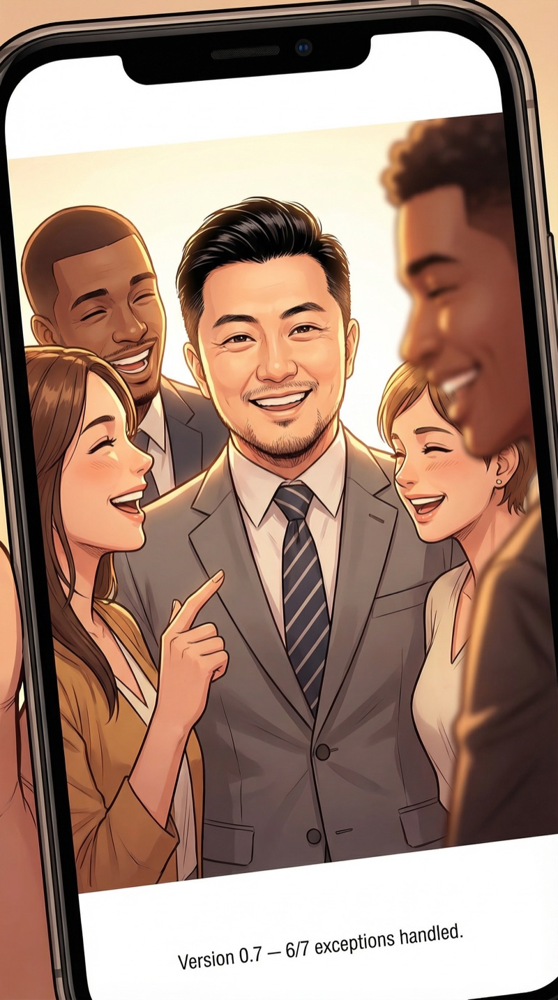
一张合影。
我和一群人站在一起，都在笑。但我不认识他们中的任何一个。
左下角有一行小字：
Version 0.7 — 6/7 exceptions handled
"还有一个未处理的exception……"
放大照片最右边——
一个模糊但轮廓很熟悉的身影。
短发。干练。便装。
在笑。
等等……是赵姐？穿便装的赵姐，在笑？
第七天。
距离debug完成——
还剩一个exception。
【重启日 · 第三章：未处理的exception】
即将载入……
重启日 · 第二章 · 循环加速
V5 · 第一人称 · EXP-896